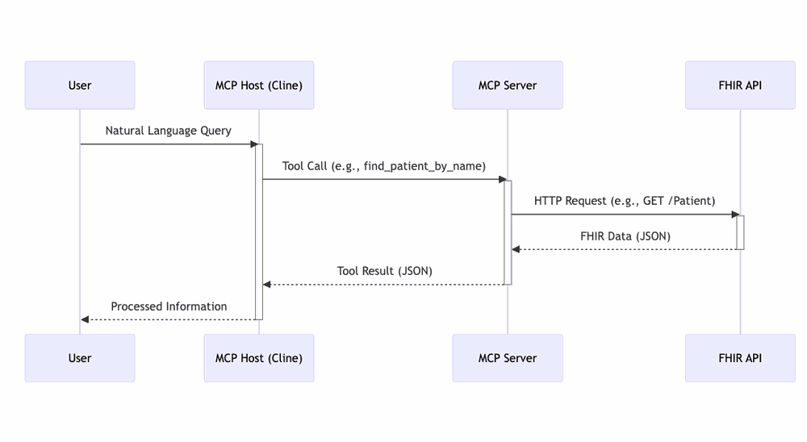
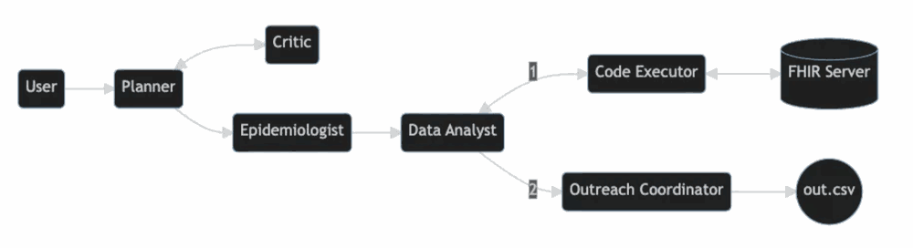
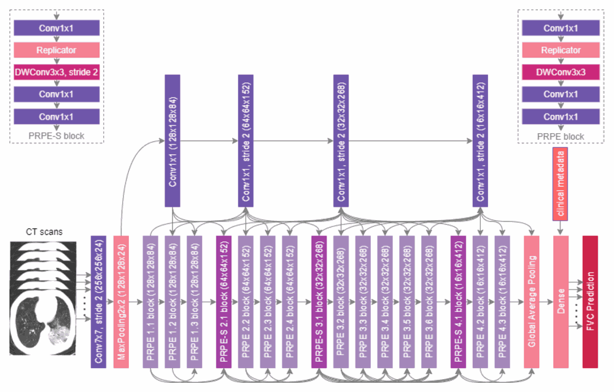
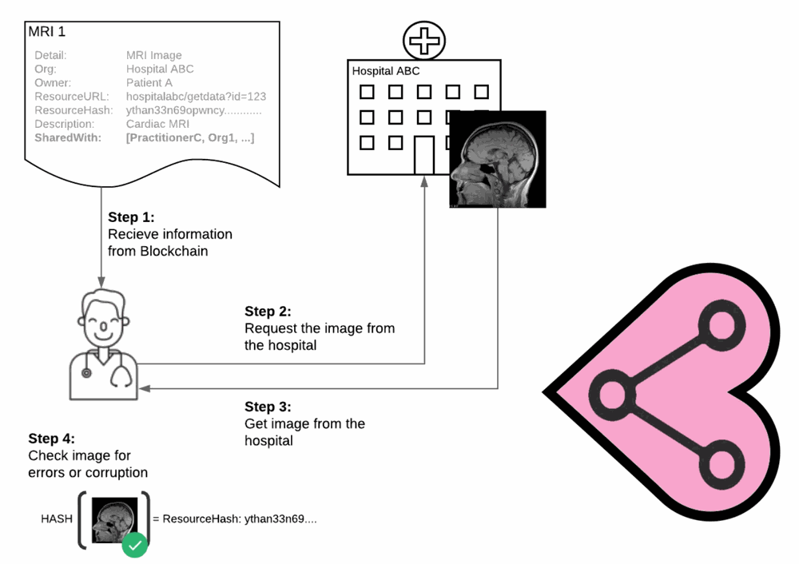

Agents that cooperate
Multi-agent systems that reason over real clinical context — orchestration, triage, and FHIR tools wired together with open protocols.
I'm Michael Lynch, BEng PhD — a product leader in Toronto with close to two decades of turning ideas into shipped products. Most of my work sits where AI meets healthcare: getting useful systems into the hands of care teams and the millions of patients they serve.
Hey, I'm Michael — I've led large-scale transformations, started a company from scratch, and stayed close enough to the code to keep contributing to open source. My early graduate work was about building datasets that taught computers to do human-like tasks; that foundation still shapes how I think about AI today.
The through-line is translation: taking something genuinely hard — a FHIR server, a clinical workflow, a research model — and turning it into a product that a real person can actually use. That means fewer demos that go nowhere, and more systems in production where patients feel the difference.
If you're working on AI, healthcare, or just want a good conversation about where the two meet, grab some time with me. Career details live over on LinkedIn.
Three overlapping problems I keep coming back to.
Multi-agent systems that reason over real clinical context — orchestration, triage, and FHIR tools wired together with open protocols.
Interfaces and MCP servers that let care teams and patients interrogate health records in plain language instead of query syntax.
Taking AI initiatives from pilot to production across large health systems — driving adoption, cutting clinical workload, and owning the roadmap.
A mix of open source, research, and products built inside large health systems.
A coordinated team of AI agents working together over Google's A2A protocol — orchestration, triage, and FHIR agents that collaborate autonomously to deliver better patient care.

Query a FHIR server in plain language — e.g. "give me the list of patients called John Smith over age 55 taking diphenhydramine".
An open-source project that streamlines patient referrals between family doctors and specialists, improving coordination of care.

An exploration using AI agents (AutoGen, GPT-4, Mixtral) to manage simulated patient populations, demonstrating what AI could do for healthcare administration.

Co-developed FibrosisNet for predicting pulmonary fibrosis, and led deployment of COVIDNet for COVID-19 detection with top pharma and hospitals including Boston Children's.

Co-founded a startup building a SaaS platform for internal data breach detection, based on my open-source Patient Data Network for secure patient data sharing.
Led AI product initiatives impacting millions of patients — reducing clinical workload and enhancing patient engagement, driving significant user growth and operationalizing product strategy.
Developed an SDK integrating the open-source OpenMRS electronic medical record with the Privata.ai platform, facilitating secure data interaction.
Publications, code, writing, and the professional timeline.